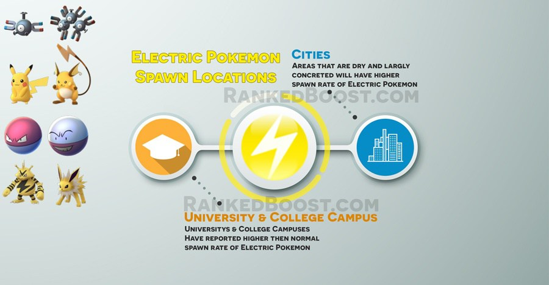

Where Do I Catch Electric Pokemon In Pokemon Go: Most electric pokemon are found near college campuses and universities. Some players have reported them in residential and largely concreted areas.
How To Get Electric Type Pokemon Tips:
Where Do I Find Electric Pokemon? – ( Electric Pokemon Locations )
Confirmed Electric Pokemon Go Spawn Locations: Universty – College Campus – Industrial Parks – Residential – School – Railway – Commercial (Shopping Districts)
Unconfirmed Electric Pokemon Go Spawn Locations: Library
There is a Total of 9 Pokemon Go Electric Pokemon: Pikachu, Raichu, Magnemite, Magneton, Voltorb, Electrode, Electabuzz and Jolteon. Zapdos is a legendary pokemon who does not appear in the wild at the moment.
